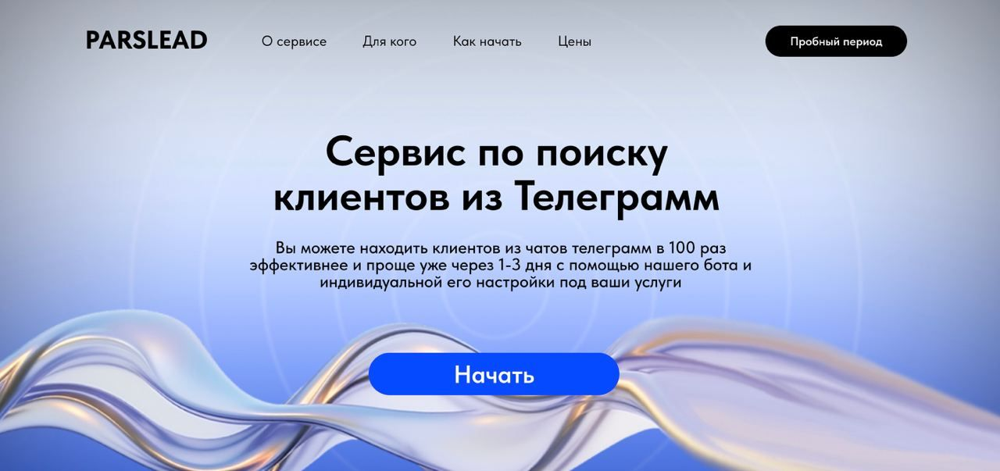
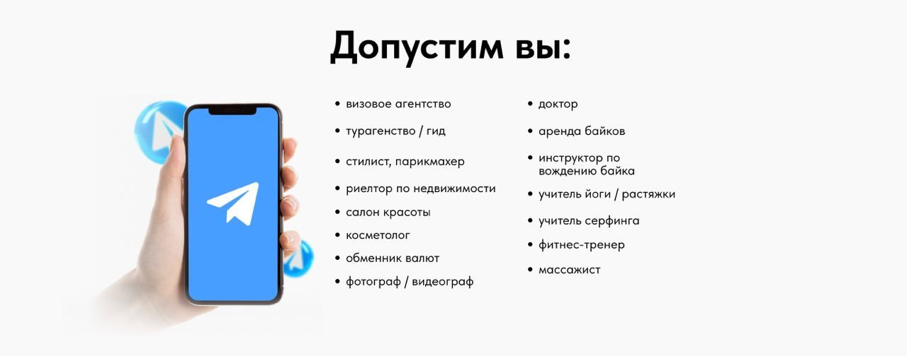
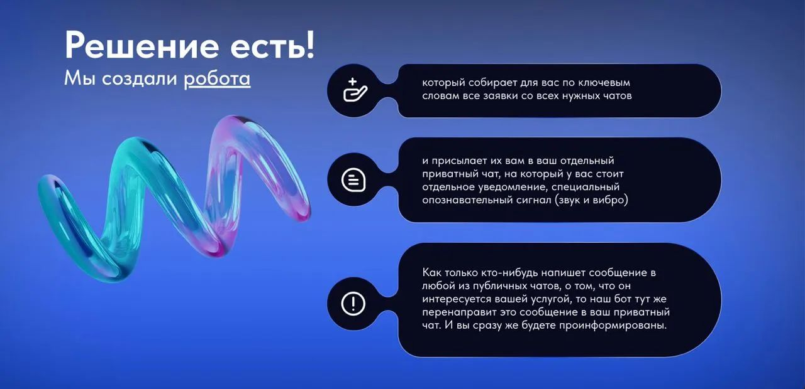
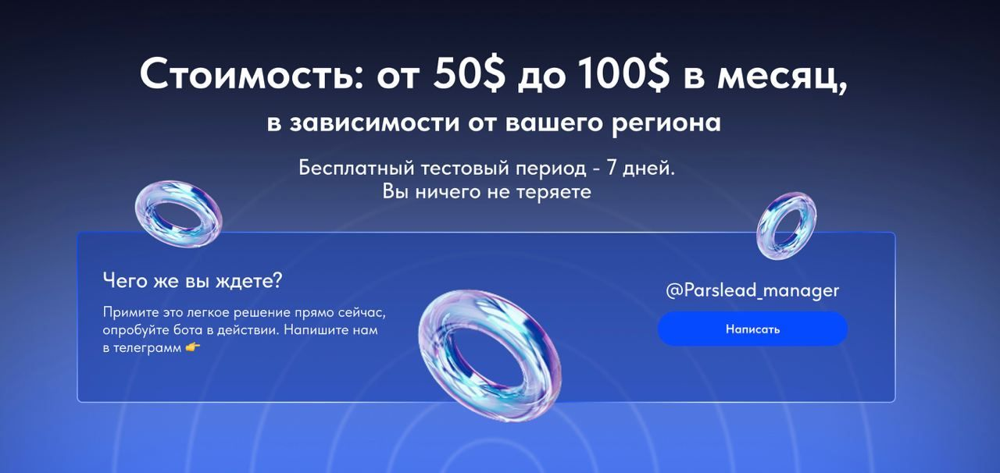
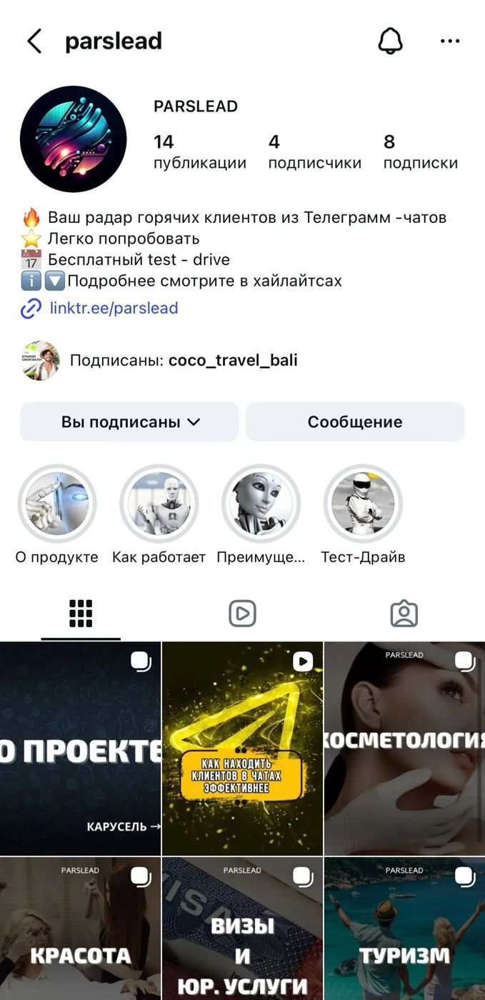
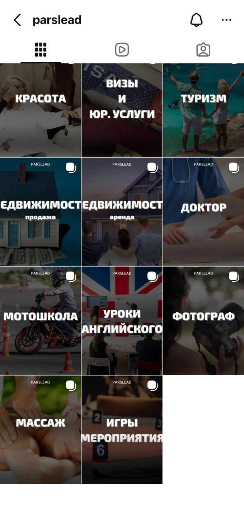

← Всё резюме
PARSLEAD - Основатель
1.05.2023 - текущее время
Я - основатель B2B-сервиса PARSLEAD: инструмент лидогенерации в Telegram, который мониторит публичные чаты по ключевым словам и помогает бизнесам находить «горячие запросы» клиентов. За 2+ года я прошёл путь от нулевого уровня в разработке и деплое до работающего продукта на сервере, платящих клиентов и выстроенной операционной системы: процессы, скрипты общения, делегирование, учёт, контроль качества выдачи и улучшение продукта по обратной связи.
САЙТ: https://parsleadbot.tilda.ws/
ИНСТАГРАМ: https://www.instagram.com/parslead

Что это за продукт и какая бизнес-ценность
Parser - сервис для поиска лидов в Telegram-чатах:
- мониторинг сообщений в публичных чатах по ключевым словам/триггерам;
- индивидуальная настройка под клиента + постоянная «дочистка» выдачи через минус-слова;
- масштабируемая база чатов под разные географии.
Ценность: клиенту не нужно вручную отслеживать сотни чатов - он получает только релевантные входящие запросы. В одной географии (Бали) собрано ~360 чатов, что делает ручной мониторинг практически нереалистичным.

ЦИФРЫ
- Первый клиент: 1 мая 2023
- Текущая активная база: стабильно 8-14 клиентов (в среднем около 10)
- Рекорд: 20 платящих клиентов в месяц в период активного привлечения
- Модель оплаты: подписка $50/клиент/месяц
- Инфраструктура: хостинг Timeweb + переход на БД для статистики
- Операционные расходы: ~$150/мес серверы + $350/мес ассистентка
- Объём источников: ~360 Telegram-чатов только по Бали + собраны чаты по Пхукету/Нячангу/Москве/Сочи (пока отключены из-за отсутствия стабильных клиентов)

Роль и зона ответственности (как у операционного директора в мини-компании)
- Собрал MVP с нуля и довёл до работающего сервиса на удалённом сервере (старт - «один файл кода», без понимания деплоя/инфраструктуры).
- Постоянно улучшал продукт через итерации и обратную связь клиентов.
- Сейчас в активной фазе улучшения ключевого функционала - статистика: переход на архитектуру с базой данных, чтобы фиксировать метрики и использовать их для качества сервиса и маркетинга.

2) Operations (процессы, контроль, повторяемость)
- Выстроил операционную систему вокруг сервиса: обслуживание клиентов, продления, обработка запросов, контроль задач.
- Создал внутреннюю базу скриптов общения в Telegram-чате с навигационным меню (быстрый доступ к типовым ответам → скорость реакции и единый стандарт коммуникаций).
- Оцифровал деятельность в Google Sheets: учёт доходов/расходов, «шахматка» оплат, база клиентов, база чатов, данные по настройкам и поддержке.
3) Team & Delegation (управление людьми и загрузкой)
4) Customer Success (удержание и качество)
- Встроил процесс, который повышает качество сервиса со временем: минус-слова и «дочистка» выдачи под каждого клиента.
- Понимаю проблему удержания: в период активного набора клиентов часть отваливалась на 2-3 месяце - это зона управляемых улучшений через:
- качество настройки/выдачи,
- прозрачные метрики (статистика),
- кейсы и сценарии использования,
- правильный маркетинг/сегментацию.
5) Finance & Unit Economics (управленческий учёт)
- Сервис полностью самоокупаем:
- инфраструктура: ~$150/мес серверы;
- команда: $350/мес ассистентка;
- выручка покрывает операционку и развитие.
- Цена продукта: $50/месяц за клиента (подписка).
6) Go-to-Market (маркетинг и продажи)
- Первые клиенты появились через личную сеть; дальше рост шёл через сарафанное радио.
- Сделаны базовые активы:
- сайт (контент мой, дизайн - фриланс),
- Instagram (тексты и оформление делал сам; хайлайты дизайн улучшал через подрядчика).
- Осознанно фиксирую ограничение: «не бесконечный поток клиентов» → требуется более точечный маркетинг и контент-стратегия.
- План развития: контент-кейсы и демонстрация сценариев использования (в т.ч. через нейросети) + статистика как основа для доверия и рекламных материалов.


Мои ключевые компетенции:
Операционный менеджмент
- Построение процессов «с нуля» и превращение хаоса в систему (SOP, регламенты, контроль задач).
- Делегирование и управление операционной командой (ассистент/менеджер), постановка задач, контроль результата.
- Управление качеством сервиса через цикл улучшений (минус-слова → чистота выдачи → обратная связь → корректировка).
Project Management
- Ведение продукта через итерации: постановка задач → реализация → проверка → улучшение.
- Приоритизация: сейчас фокус на статистике и архитектуре с БД как точке роста продукта и маркетинга.
- Управление подрядчиками (фриланс на сайт/дизайн) и внутренними исполнителями.
Customer Success & коммуникации
- Построение клиентского контура: онбординг → сопровождение → платежи/продления → поддержка.
- Скрипты и стандартизация коммуникаций (быстрое реагирование, единый стиль, масштабирование ответов).
Финансы и управленческая дисциплина
- Учет доходов/расходов, контроль оплат, таблицы и операционная аналитика.
- Понимание unit-экономики и операционной окупаемости (затраты на сервера/персонал покрываются выручкой).
Growth-мышление (на уровне операционного директора)
- Осознание «узкого рынка» → необходимость точного позиционирования и контента.
- Готовый план: кейсы + статистика + сценарии применения, чтобы масштабировать продажи.
Личностные качества, подтверждённые кейсом
- Ownership: отвечаю за результат целиком - продукт, команда, клиент, деньги, процессы.
- Самообучаемость: старт без навыков разработки → рабочий сервис + инфраструктура.
- Системность: скрипты, таблицы, контроль оплат, база знаний, повторяемые процессы.
- Практичность и ориентация на эффективность: автоматизация того, что «физически невозможно делать руками» (сотни чатов).
- Управление через улучшения: постоянная очистка выдачи, фокус на метриках и статистике.
Как я могу быть полезен компании как Operations Director
- Наведу порядок в операционных процессах и сделаю их повторяемыми (SOP, контроль, роли, KPI).
- Сниму рутину с ключевых людей через делегирование и систематизацию.
- Настрою клиентский контур: скорость реакции, качество сервиса, продления, удержание.
- Введу управленческий учёт и прозрачность по цифрам.
- Соберу базу знаний/скрипты/шаблоны, чтобы команда работала единообразно.
- Буду вести проекты до результата: от постановки задачи до внедрения и проверки эффекта.